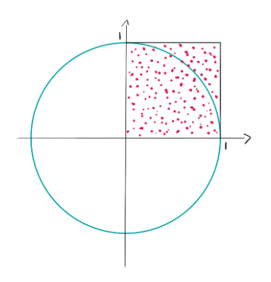
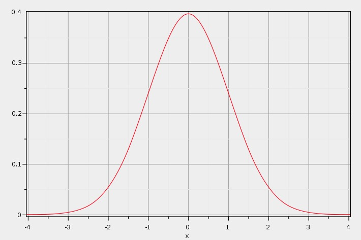

Contenidos | Próximo (2 NumPy)
5.1 Random
En esta sección veremos algunas de las funciones del módulo random. Este módulo se usa para generar valores pseudo-aleatorios. Desde el punto de vista práctico, usaremos estos valores como perfectamente aleatorios --al ser la computadora una máquina determinística sabemos que esto no es completamente cierto. De hecho, en lo que sigue, por simplicidad, omitiremos el prefijo pseudo y hablaremos de números aleatorios aunque no lo sean exactamente.
Valores discretos
Podemos generar números enteros aleatorios entre dos extremos. Por ejemplo, para simular la tirada de un dado podemos generar un número entre 1 y 6.
import random
dado = random.randint(1,6) # devuelve un entero aleatorio entre 1 y 6
Si queremos simular una primera tirada del juego la generala tendremos que generar cinco valores al azar:
import random
tirada=[]
for i in range(5):
tirada.append(random.randint(1,6))
print(tirada)
Ejercicios:
Ejercicio 5.1: Generala servida
Queremos estimar la probabilidad de obtener una generala servida (cinco dados iguales) en una tirada de dados. Podemos hacer la cuenta usando un poco de teoría de probabilidades, o podemos simular que tiramos los dados muchas veces y ver cuántas de esas veces obtuvimos cinco dados iguales. En este ejercicio vamos a usar el segundo camino.
Escribí una función tirar() que devuelva una lista con cinco dados generados aleatoriamente. Escribí otra función llamada es_generala(tirada) que devuelve True si y sólo si los cinco dados de la lista tirada son iguales.
Luego analizá el siguiente código. Correlo con N = 100000 varias veces y observá los valores que obtenés. Luego correlo algunas veces con N = 1000000 (ojo, hace un millón de experimentos, podría tardar un poco):
G = sum([es_generala(tirar()) for i in range(N)])
prob = G/N
print(f'Tiré {N} veces, de las cuales {G} saqué generala servida.')
print(f'Podemos estimar la probabilidad de sacar generala servida mediante {prob:.6f}.')
¿Por qué varían más los resultados obtenidos con N = 100000 que con N = 1000000? ¿Cada cuántas tiradas en promedio podrías decir que sale una generala servida? ¿Cómo se puede calcular la probabilidad de forma exacta?
Ejercicio 5.2: Generala no necesariamente servida
Si uno juega con las reglas originales (se puede volver a tirar algunos de los cinco dados hasta dos veces, llegando hasta a tres tiradas en total) siguiendo una estrategia que intente obtener generala (siempre guardar los dados que más se repiten y tirar nuevamente los demás) es más probable obtener una generala que si sólo consideramos la generala servida. Escribí un programa que estime la probabilidad de obtener una generala en las tres tiradas de una mano y guardalo en un archivo generala.py.
Extra: Hay gente que, si en la primera tirada le salen todos dados diferentes, los mete al cubilete y tira los cinco nuevamente. Otras personas, eligen uno de esos dados diferentes, lo guardan, y tiran sólo los cuatro restantes. ¿Podés determinar, por medio de simulaciones, si hay una de estas estrategias que sea mejor que la otra?
Semillas
A veces queremos generar números (pseudo-)aleatorios de una manera reproducible. Puede sonar contradictorio, pero no lo es: es aquí donde se ve claramente la naturalez pseudoaleatoria de estos números. Si fijamos una semilla con el comando random.seed(semilla), donde semilla es un número entero, la secuencia de números aleatorios que obtengamos será reproducible utilizando la misma semilla.
Probá por ejemplo correr dos veces el siguiente código:
import random
random.seed(31415)
tirada=[]
for i in range(5):
tirada.append(random.randint(1,6))
print(tirada)
Elecciones con reposición
A veces queremos elegir al azar un elemento de una lista y no solo un número. En el caso que vimos recién de los dados, nuestra lista sería [1, 2, 3, 4, 5, 6] pero podría ser también ['uno', 'dos', 'tres', 'cuatro', 'cinco', 'seis'].
La función random.choice() toma una secuencia y devuelve un elemento aleatorio.
caras = ['uno', 'dos', 'tres', 'cuatro', 'cinco', 'seis']
print(random.choice(caras))
Si queremos realizar múltiples elecciones aleatorias de la lista podemos usar la función random.choices()
print(random.choices(caras,k=5))
Estos son experimentos con reposición en el sentido de que si en el primer dado sacamos un dos, al tirar el segundo dado podemos sacar otro dos, repitiendo el valor. El término reposición viene de pensar en una urna con bolitas. Si un dado lo pensamos como una urna con seis bolitas (etiquetadas del uno al seis), luego de sacar una bolita (tirar el dado una vez) reponemos la bolita que sacamos, de forma que en el siguiente experimento (tirar nuevamente el dado) podamos obtener el mismo valor.
Ejercicio 5.3: Cocumpleaños
Haciendo miles de experimentos numéricos, estimá la probabilidad de que en un grupo de 30 personas elegidas al azar, dos cumplan años el mismo día. Escribí un programita que permita calcular esa probabilidad asumiendo que el año tiene 365 días.
Modificando un poco tu programa anterior, ¿podés calcular cuántas personas tiene que haber en un grupo para que sea más probable que dos cumplan años el mismo día que que todas cumplan en días diferentes?
Observación: Les dejamos una nota sobre las Simulaciones de Monte Carlo, por Adrián Paenza, que está relacionada con estos temas.
Elecciones sin reposición
Si queremos modelar un juego con un mazo de naipes, es natural modelarlo sin reposición. Cuando le damos tres cartas a un jugador la segunda carta no puede ser igual a la primera y la tercera será diferente de las dos anteriores.
En un mazo de naipes españoles, cada carta tiene un palo y un valor. El mazo tiene 40 naipes. Los palos son oro, copa, espada y basto y los valores van del 1 al 7 y de del 10 al 12. Usaremos una comprensión doble de listas para generar los naipes (todas las combinaciones posibles de valores y palos).
valores = [1, 2, 3, 4, 5, 6, 7, 10, 11, 12]
palos = ['oro', 'copa', 'espada', 'basto']
naipes = [(valor,palo) for valor in valores for palo in palos]
Ahora podemos usar random.choice(naipes) para seleccionar un naipe. Sin embargo, si usáramos random.choices(naipes, k=3) para seleccionar tres naipes para un jugador, podríamos estar repitiendo el mismo naipe más de una vez, lo que es incorrecto. En este caso tenemos que usar elecciones múltiples sin reposición. Para eso usamos la función sample del módulo random: random.sample(naipes,k=3).
A diferencia de choices donde el parámetro k podía tomar cualquier valor, al dar la instrucción random.sample(naipes,k=?) la variable k no puede ser mayor que la cantidad de naipes (es decir 40) ya que no se puede sacar sin reposición más elementos que la cantidad total.
Ejercicio 5.4: Envido
Teniendo en cuenta las reglas del Truco, estimá la probabilidad de obtener 31, 32 o 33 puntos de envido en una mano. ¿Son iguales estas tres probabilidades? ¿Por qué?
Observación: como corresponde, en esta materia jugamos al truco sin flor. Si no conocés las reglas del Truco y no te dan ganas de aprenderlo ahora, simplemente salteá este ejercicio.
Guardá este ejercicio en un archivo envido.py para entregar.
Mezclar
La última función que queremos introducir es útil en muchos contextos. En los juegos de naipes, para continuar con nuestro ejemplo, es muy usual mezclar el mazo entero antes de repartir. En Python usamos la función shuffle del módulo random.
valores = [1, 2, 3, 4, 5, 6, 7, 10, 11, 12]
palos = ['oro', 'copa', 'espada', 'basto']
naipes = [(valor,palo) for valor in valores for palo in palos]
random.shuffle(naipes)
print(naipes)
Observá que la función shuffle() modificó la lista que le pasamos como parámetro. Una vez mezclado el mazo, podemos consultar las tres cartas que quedaron al final:
naipes[-3:]
o directamente sacarlas del mazo:
n1 = naipes.pop()
n2 = naipes.pop()
n3 = naipes.pop()
print(f'Repartí el {n1[0]} de {n1[1]}, el {n2[0]} de {n2[1]} y el {n3[0]} de {n3[1]}. Quedan {len(naipes)} naipes en el mazo.')
Valores continuos
Además de generar valores (pseudo)aleatorios discretos, también es posible generar valores continuos. La funcion random.random() genera un número de punto flotante entre 0 y 1.
Ejercicio 5.5: Calcular pi
Es interesante ver cómo los algoritmos estocásticos (basados en elecciones aleatorias) también sirven para resolver problemas que no tienen nada de estocásticos. En este ejercicio vas a usar el generador random() para aproximar pi.
Por definición pi es el área del círculo de radio uno. Si generamos puntos (x,y) con:
def generar_punto():
x = random.random()
y = random.random()
return x,y
tendremos puntos dentro del cuadrado [0, 1]x[0, 1]. Algunos de estos puntos del cuadrado caerán dentro del círculo unitario (los que cumplan que x^2 + y^2 < 1) y otros puntos caerán afuera. La proporción de puntos que caigan dentro del cuarto de círculo guardará relación con la proporción entre el área del cuarto de círculo y el área del cuadrado. Obviamente hay una componente aleatoria, pero a medida que la cantidad de puntos crece, la proporción de puntos se acercará a la proporción entre las dos áreas.

Si el área del círculo completo es pi, el área de nuestro cuarto de círculo es pi/4. Por otro lado el área del cuadrado unitario es 1. Por lo tanto, si generamos N puntos con una distribución uniforme en el cuadrado unitario, esperamos que pi/4 de estos N puntos caigan dentro del cuarto del círculo y el resto afuera. Es decir que, si llamamos M al número de puntos que caen dentro del círculo, esperamos que M ~(pi/4 * N).
Despejando pi de esta estimación, obtenemos que pi ~ 4*M/N. Esto nos permite estimar pi mirando cuántos puntos caen realmente dentro del círculo del total de puntos.
Escribí un programa estimar_pi.py que genere cien mil puntos aleatorios con la función generar_punto(), calcule la proporción de estos puntos que caen en el círculo unitario (usando ¿x^2 + y^2 < 1?) y use este resultado para dar una aproximación de pi.
Ejercicio 5.6: Gaussiana
Con random.random() generamos valores aleatorios entre 0 y 1 con una distribución uniforme. En esa distribución, todos los valores posibles tienen la misma probabilidad de ser seleccionados. También es posible generar valores aleatorios con otras distribuciones. Una de las distribuciones más importantes es la distribución normal o Gaussiana.
La distribución normal tiene dos parámetros, denominados media y desvío estándar y denotados usualmente con las letras griegas mu y sigma, respectivamente.

La función random.normalvariate(mu,sigma) genera números aleatorios según esta distribución de probabilidades. Por ejemplo, usando mu = 0 y sigma = 1 podemos generar 6 valores aleatorios así:
>>> for i in range(6):
print(f'{random.normalvariate(0,1):.2f}', end=', ')
-0.60, 0.06, -1.33, -0.62, -0.81, 0.63,
La distribución normal tiene muchos usos. Uno de ellos es modelar errores experimentales, es decir la diferencia entre el valor medido de una magnitud física y el valor real de dicha magnitud.
Hagamos algún ejercicio sencillo antes de terminar. Supongamos que una persona se compra un termómetro que mide la temperatura con un error aleatorio normal con media 0 y desvío estándar de 0.2 grados (error gaussiano). Si la temperatura real de la persona es de 37.5 grados, simulá usando normalvariate() (con mu y sigma adecuados) n = 99 valores medidos por el termómetro.
Imprimí los valores obtenidos en las mediciones de temperatura simuladas y luego, como resumen, cuatro líneas indicando el valor máximo, el mínimo, el promedio y la mediana de estas n mediciones. Guardá tu programa en el archivo termometro.py.
Para encontrar el máximo y mínimo podés usar y agrandar tu código de busqueda_en_listas.py o usar las primitivas max() y min() de Python. El promedio es la suma de los valores dividido su cantidad; podés programarla desde cero o usar la primitiva sum() y un cociente por n. Finalmente, la mediana de una cantidad impar de valores es el valor en la posición central cuando los datos están ordenados. Acá podés usar el método sort() de listas. Y ya que estamos, ¿se te ocurre cómo encontrar los cuartiles?